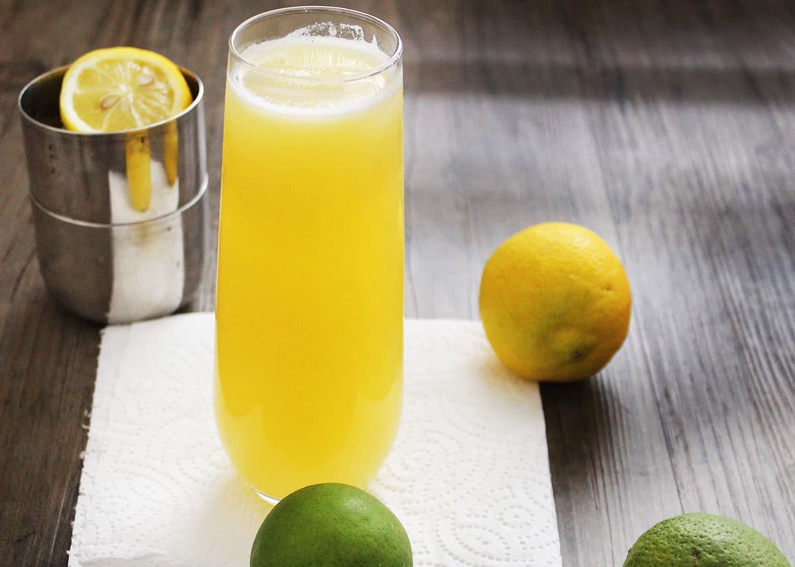

Um refrescante suco para adoçar e deixar seu dia mais leve!

Ingredientes:
- 1 uni suco de laranja (ou concentrado diluído 50/50 com 7Up ou Sprite)
- 2 xícaras de achocolatado em pó
- 2 uni suco de cranberry apple (refrigerado)
- 2 uni cidra de maçã espumante (refrigerado)1 xícara de açúcar
- fatia de laranja e açúcar (opcional, para a borda do vidro)
- cranberries frescos (opcional, para enfeite)
- Fatias de maçã (opcional, para enfeite)
Todos os direitos reservados © Victor Varjão - Théo Alves - Sara Duarte